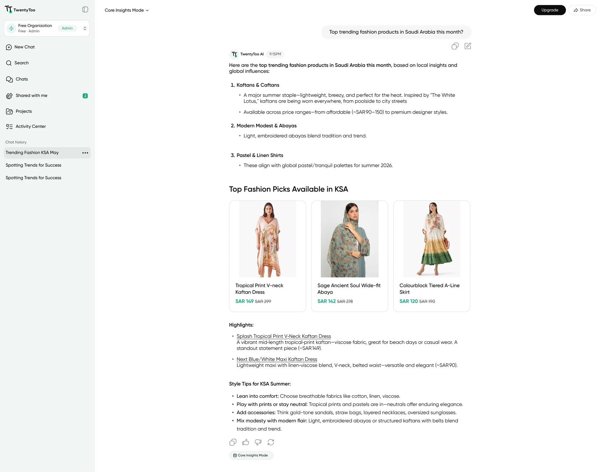

Designing for trust when the AI isn't sure
I lead product design at TwentyToo, a B2B AI-SaaS platform that gives retail teams real-time visibility into the Gulf market. The hard part wasn't the screens. It was turning AI answers that aren't always certain into something a category manager can act on.
The short version
- Lead product design on TwentyToo, a B2B AI-SaaS platform for Gulf retail market intelligence.
- The users are category managers: experts in their market, not in AI.
- Gave the empty state suggested questions written like real category-manager tasks, so a first-time user knows what to ask.
- Made uncertainty visible with confidence badges, ranges instead of single numbers, and clear alerts when data isn't live yet.
- Gave users control with three response modes that trade speed against source breadth.
- Built a style guide and a 96-component library with one visual language for charts and insight cards.
- Early-stage product, so no formal metrics yet. The signal came from PM and stakeholder feedback.
Ask the market a question
TwentyToo gives retail and e-commerce teams real-time visibility into the Gulf market: prices, discounts, competitor moves and assortment shifts across millions of products. You ask in plain language, like "how have women's dress prices in the UAE changed over the last 90 days?", and the platform answers from its own database.
The product is early in its life. Fashion is live in Saudi Arabia and the UAE, with more categories on the way. That shaped most of the decisions below.
Experts in the market, not in AI
The people using TwentyToo are category managers. They know pricing and assortment better than anyone, but they aren't technical, and they turn these answers into real pricing decisions. An AI answer that is wrong but sounds sure of itself is worse than no answer.
They shouldn't need to know how the model works to trust it.
Results feed pricing and assortment calls, so clarity beats volume.
Model output has gaps and varying confidence, and coverage is still growing.
Discovery through the people closest to the market
I lead product design end to end: the interaction model, the UI strategy and the style guide. With no dedicated research function, discovery ran through conversations with the PM and stakeholders, who know the category managers and the market first-hand. That suits an early-stage team that moves fast.
The interface should never claim more certainty than the system actually has.
Design principle · TwentyToo
Make the uncertainty visible, then let people choose
Three ideas drove the interface: a clear starting point, visible uncertainty, and a choice over depth. A design system underneath keeps it consistent.
4A · A clear starting pointStart from a question, not a blank box
A blank input tells a first-time user nothing about what the product can do. So the empty state suggests questions, written the way a category manager would actually ask them: forecast sell-through, identify overstock risk, compare margin against last season.
- Suggested prompts start with a verb, so they read as tasks, not features
- The input hint names what to ask about: trends, pricing, sales, suppliers, or any retail analytics question

Show how sure the system is
- Confidence badges on results, so certainty is visible instead of assumed
- Ranges instead of a single exact number when confidence is lower
- Clear alerts when data is missing, or a region or category isn't live yet

Three modes, one trade-off: speed against breadth
Category managers don't always want the same thing from a question. Sometimes they need a fast answer from verified data, sometimes a wider picture. Instead of picking one speed for everyone, I named the trade-off and left the choice to the user.
| Mode | Speed | Sources |
|---|---|---|
| Core Insights | Fastest | TwentyToo database only |
| Fast Expanded Insights | Fast | Database + rapid internet signals |
| Expanded Insights | Slower | Database + internet search |

A style guide the team can build on
- One consistent way to present charts and insight cards across the product
- A library of 96 reusable components, so new features ship without rebuilding the same patterns, and handoff gets faster

Design starts with the model's limits
Honest uncertainty design starts before the interface. I worked closely with engineering and data to understand what the model can and can't do today, like no sell-through forecasting yet and partial regional coverage, then designed the interface to reflect those limits instead of hiding them.
Early product, qualitative signal
The product is early and doesn't have mature analytics yet, so I don't have metrics to report. The signal I worked from was direct feedback from the PM and stakeholders, who sit close to how category managers use the tool.
Next, I'd add one simple measure from day one: how often each response mode gets used. It would turn the qualitative loop into something measurable.